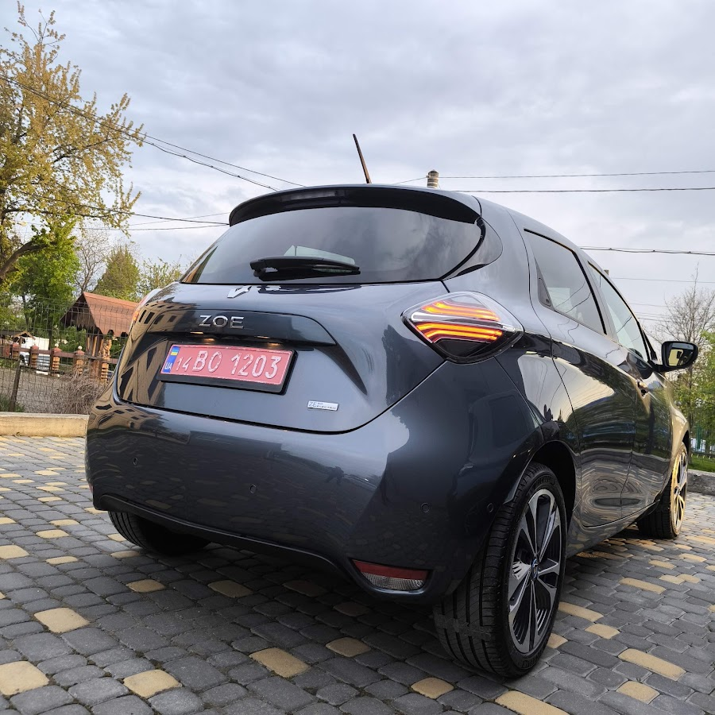

СТО / Мобільна техдопомога · Львів
Автосервіс СТО. Виїзд майстра..
Мобільна техдопомога
м. Львів, вул. Антоновича, 138Б. Зателефонуйте, щоб уточнити потрібні роботи та час приїзду.
093 154 1698Автосервіс СТО. Виїзд майстра.Львів

Фото сервісу
Перемикайте фото стрілками. Натисніть на знімок, щоб відкрити повністю.
01 / РОБОТИ СЕРВІСУ
Послуги
Вартість і можливість виконання потрібних робіт уточнюйте телефоном.
Ціну уточнюйте за телефоном
Опишіть, що потрібно автомобілю, та уточніть вартість потрібних робіт.
02 / ІНФОРМАЦІЯ
Про сервіс
Перед приїздом
Зателефонуйте, щоб узгодити потрібні роботи та час приїзду.
Графік роботи
Пн–Пт 09:00–18:00; Сб 09:00–15:00; Нд вихідний
Вартість робіт
Ціну уточнюйте за телефоном.
03 / КОНТАКТИ
Львів, вул. Антоновича, 138Б
Карта потребує інтернету. Адреса й посилання на маршрут — поруч.
ТЕЛЕФОН СЕРВІСУ
Зателефонуйте нам
Уточніть доступні роботи, вартість
і час приїзду.